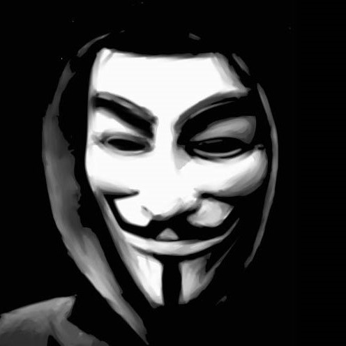

TyBro is
a company of 2 programmers which are specialized in developing both front and back end software for cross-browser. Also highly motivated, self-directed Middle Software Professionals with 3+ years experience in developing various enterprise software solutions each!
Andrew

Marc Zakharovich Chagall was a Russian-French artist of Belarusian Jewish origin.[1] An early modernist, he was associated with several major artistic styles and created works in virtually every artistic format, including painting, book illustrations, stained glass, stage sets, ceramic, tapestries and fine art prints.
Art critic Robert Hughes referred to Chagall as "the quintessential Jewish artist of the twentieth century" (though Chagall saw his work as "not the dream of one people but of all humanity"). According to art historian Michael J. Lewis, Chagall was considered to be "the last survivor of the first generation of European modernists". For decades, he "had also been respected as the world's preeminent Jewish artist". Using the medium of stained glass, he produced windows for the cathedrals of Reims and Metz, windows for the UN, and the Jerusalem Windows in Israel. He also did large-scale paintings, including part of the ceiling of the Paris Opéra.
Before World War I, he travelled between Saint Petersburg, Paris and Berlin. During this period he created his own mixture and style of modern art based on his idea of Eastern European Jewish folk culture. He spent the wartime years in Soviet Belarus, becoming one of the country's most distinguished artists and a member of the modernist avant-garde, founding the Vitebsk Arts College before leaving again for Paris in 1922.
Viktor
Marc Zakharovich Chagall was a Russian-French artist of Belarusian Jewish origin.[1] An early modernist, he was associated with several major artistic styles and created works in virtually every artistic format, including painting, book illustrations, stained glass, stage sets, ceramic, tapestries and fine art prints.
Art critic Robert Hughes referred to Chagall as "the quintessential Jewish artist of the twentieth century" (though Chagall saw his work as "not the dream of one people but of all humanity"). According to art historian Michael J. Lewis, Chagall was considered to be "the last survivor of the first generation of European modernists". For decades, he "had also been respected as the world's preeminent Jewish artist". Using the medium of stained glass, he produced windows for the cathedrals of Reims and Metz, windows for the UN, and the Jerusalem Windows in Israel. He also did large-scale paintings, including part of the ceiling of the Paris Opéra.
Before World War I, he travelled between Saint Petersburg, Paris and Berlin. During this period he created his own mixture and style of modern art based on his idea of Eastern European Jewish folk culture. He spent the wartime years in Soviet Belarus, becoming one of the country's most distinguished artists and a member of the modernist avant-garde, founding the Vitebsk Arts College before leaving again for Paris in 1922.
If you want to get in touch, you can contact us at twobro@gmail.com